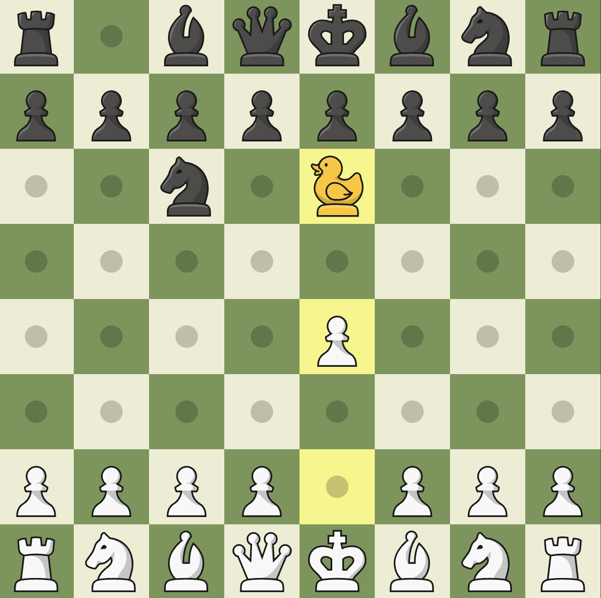
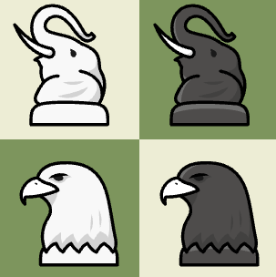
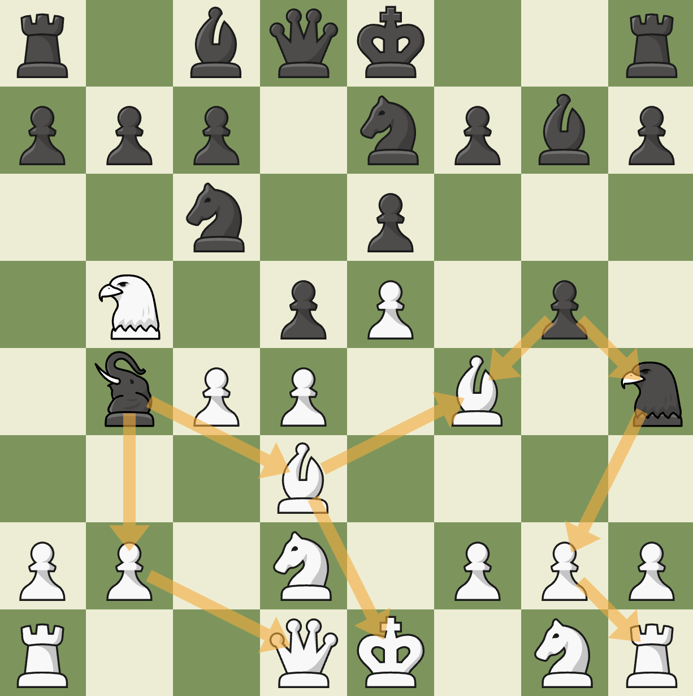

The pieces category features variants that add new pieces to the game, either from the setup, or added later on in the game.
| Variant Name | Duck | Seirawan | Musketeer |
|---|---|---|---|
| Game Length | Long | Normal | Normal |
| Strategy | ★★★★☆ | ★★★☆☆ | ★★★★☆ |
Duck Chess
Rules
The rules to Duck chess are extremely simple. After white makes their first move, they can place a duck piece to any unnocupied location on the board. After that, after each move, you move the duck to a different location anywhere on the board. The duck cannot be taken, cannot take, but can be jumped over.
Strategy
Duck chess adds quite a bit of strategy. You want to try to use the duck to restrict piece movement. Mainly the king's movement. You can also take a piece, and then block any pieces from taking your piece, essentially winning you material. You should also make sure your pieces are always protected. Using pawns to protect is super effective, since you can't use a duck to cut off protection. The image on the right shows how white used the duck to stop black from moving their e-pawn. Black did knight c6, and is about to move the duck somewhere else.
Seirawan
Rules
Seirawan chess adds a nice little mix to the game by adding two new pieces for each player. The setup is the same as a normal chess game. Every time you move a piece for the first time (not including the pawn), you may place a new piece in its previous location. This means that you only have 8 chances to play the 2 new pieces. The 2 new pieces are the elephant and the eagle. The elephant moves like a rook and a knight combined, while the eagle moves like a knight and bishop combined.
Strategy
I recommend developing your 2 new pieces early. Make sure that they are out in the open pretty early, and treat them as 7-point pieces. I don't actually know how much they are worth, but I'd say the elephant is around 7 and the eagle is closer to 6. You can treat them as six or seven-point pieces, but the important thing is to recognize that they’re strong and you don’t want them sitting on the back rank doing nothing. Getting them into active squares lets you take advantage of their hybrid movement and pressure multiple parts of the board at once. Just be careful not to use them too much. Because they’re so powerful, your opponent will happily trade weaker pieces to take them off the board if you leave them hanging. Also, since both of them have a little knight DNA, look for some sneaky forks that you can apply. The image on the left shows black using their pieces to their fullest potential, causing black to have many winning tactics.
Musketeer
Rules
Musketeer Chess keeps the familiar 8×8 board and the usual chess pieces, but before the game begins each player picks from a set of ten special “musketeer” pieces. First, White chooses one of the ten and places it on an invisible row behind his back rank; then Black either accepts that choice (in which case they choose a second piece) or declines — in which case the default pair (Leopard + Cannon) is used. Once both players have placed their two musketeer pieces behind their back rank (on phantom ranks 0 and 9), the game proceeds just like orthodox chess, with one big twist: a musketeer piece only enters the board once the piece directly in front of it moves for the first time (or is removed before moving, in which case the musketeer is lost). The musketeer pieces are shown in the image to the right. You can go to a more in depth musketeer chess blog to read about the ways the pieces move and way deeper strategy.
Strategy
This variant’s strategy becomes a lot more creative and tactical than in regular chess. Because you don’t know exactly when or where the extra pieces will appear, memorizing standard openings loses much of its value. You and your opponent must constantly adapt: choosing which musketeer pieces to deploy, deciding where to “gate” them (i.e. behind which original piece), and planning timing so that their entry into play gives maximum impact while minimizing risk. For instance, using powerful musketeer pieces like Dragon or Chancellor can drastically shift control — but deploying them carelessly might leave them vulnerable or result in their loss if the front-rank piece is captured before moving.